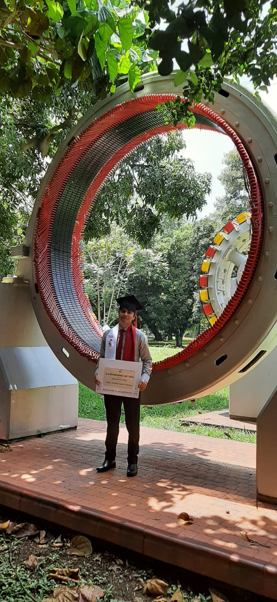

Hi everyone!
Hola a todos!
I am Electronic Engineer
I love technology, software development, computer vision and I love to read web novels in my free time.
Soy Ingeniero Electrónico
Un entusiasta por la tecnología, desarrollo de software, visión artificial , y me encanta leer novelas de realismo mágico en mi tiempo libre.

I had my engineering degree in October 2021, but I had been working since 2019 using Python and Linux.
En octubre de 2012 obtuve mi grado en ingeniería pero estuve trabajando desde octubre 2019 usando python y linux.
I am currently improving my knowledge of backend technologies, especially in the Python language in which I want to become an expert. Although I am always willing to learn other languages and technologies. For example, among the books I want to read this year is "Clean Code", a book that teaches how to have best practices in programming through Java exercises.
Actualmente estoy mejorando mis conocimientos en tecnologías backend especialmente en el lenguaje de Python, lenguaje en el cual quiero convertirme en un experto. Sin embargo siempre estoy dispuesto a aprender otros lenguajes y tecnologías. Entre mis libros pendientes de este año se encuentra Clean Code el cual es un libro que con ejercicios de Java muestra cómo tener mejores prácticas en programación.
Read More...
So, Do you want to know more about me?
Así que quieres conocerme más?
Well here we go...
veamos ...
About my personality, I consider myself a calm and very patient person. I like to watch series to practice my listening skills in English. I am currently watching Breaking Bad and before that I was watching Lucifer. I love Lucifer and I totally recommend it!! In addition, in my free time, I like to read web novels and I try to find them in English to practice my reading too. The last web novel I read is “The amazing son in law”, it is a story of magic realism. If you don't mind that a story repeats the plot formula several times, I highly recommend it!. Before I was reading a web novel named “ Overlord” I totally recommended that story, I even re-read it a couple of times. It is amazing and it has an anime!!!!
As an Electronics Engineer I have always been in touch with programming, but when I saw a course called Digital Signal Processing in 2018 all became about programming!!!!
With digital signal processing, I started to like artificial intelligence, so I took a course on neural networks. At that time I got to know the Python language. I think this programming language is quite simple and at the same time very powerful. I can't believe that almost all of Battlefield 2 is written in Python.
One of the first projects I was using neural networks was the detection of 3 hand movements through electromyographic signals for the digital signal processing class. Although the application performance was not quite good, I feel very proud about the work I made. Being able to perform signal filtering, feature extraction techniques, use of a feed-forward network for classification, and the presentation of the results in a graphical interface were very rewarding.
After that, while I followed the signal processing path I took a professional elective called “Artificial vision” in 2019. Thanks to this course I got what I consider my first important job as an electronic Engineer. This was the position of factory process research intern at Cenicaña, where I have been working until now, 2021.
I think I was very lucky with the job at Cenicaña. The people I worked with were always willing to share their knowledge and help me. Also, I am very grateful to Cenicaña because they were always very flexible with my work schedule, which allowed me to follow my classes while working. So, if anyone is looking for an internship, Cenicña is a totally recommendable place.
En cuanto a mi personalidad considero que soy una persona tranquila y paciente, me gusta practicar mis habilidades de escucha en inglés mirando series. Actualmente estoy mirando Breaking bad, y antes estuve mirando Lucifer, una serie que me encanto, ¡la recomiendo totalmente! También en mis tiempos libres me gusta leer novelas web, y también trato de buscarlas en inglés para practicar mi lectura. La última que estuve leyendo se la puede encontrar con el título “El yerno millonario”. Esta es una historia de realismo mágico, si no te importa que repitan la fórmula de la trama una y otra vez te la recomiendo mucho. Y Anterior a esa novela me leí una novela llamada “Overlord”, esa si la recomiendo mucho! incluso la he releído varias veces!! y hasta tiene un anime.
Como ingeniero electrónico siempre estuve en contacto con la programación pero cuando mire una materia llamada procesamiento de señales digitales en 2018 todo se convirtió en programación!.
Con la materia de procesamiento de señales me empezó a gustar el machine learning y por ello tomé una materia llamada redes neuronales, fue allí donde conocí el lenguaje de python. Este lenguaje me ha fascinado mucho porque pienso que es simple y a la vez muy potente.
Recuerdo que uno de los primeros proyectos que realicé con redes neuronales fue detectar 3 tipos de movimiento de la mano a través de señales electromiográficas para la materia de procesamiento de señales. Aunque el rendimiento de la aplicación no fue bueno, me sentí muy orgulloso del trabajo que hice, realizar un filtrado a las señales, aplicar técnicas de extracción de características, utilizar una red feed forward para la clasificación y presentar los resultados en un interfaz gráfica fue muy gratificante!!
Luego, siguiendo el camino de procesamiento de señales , mire una materia llamada visión artificial en 2019. Gracias a esta materia conseguí ese mismo año lo que considero mi primer empleo de importancia. Este fue el puesto de practicante investigación de procesos de fábrica en Cenicaña, donde trabajó hasta el dia de hoy 2021
El haber trabajado con Cenicaña me hace sentir bastante afortunado, las personas con las que trabajé siempre estuvieron dispuestas a compartir sus conocimientos y ayudarme en lo que necesitara. Además me encuentro muy agradecido con Cenicaña debido a que siempre fueron muy flexibles con los horarios, y me permitieron seguir estudiando mientras trabajaba. Así que si alguien lee esto y está buscando prácticas, Cenicaña es un lugar totalmente recomendado!!
Show less